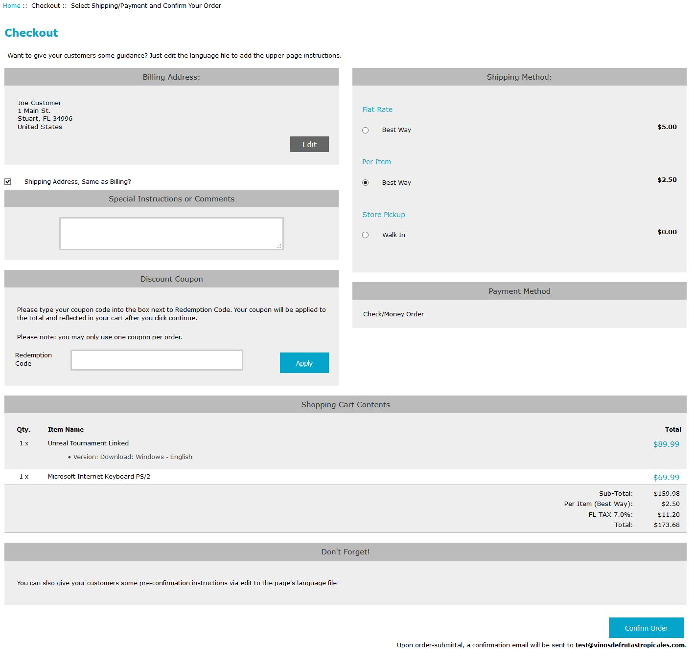

<!DOCTYPE html>
<html xmlns="http://www.w3.org/1999/xhtml">
<head>
<meta http-equiv="Content-Type" content="text/html; charset=utf-8" />
<meta name="viewport" content="width=device-width, initial-scale=1.0" />
<link rel="icon" href="../vinos_favicon.ico" type="image/x-icon" />
<link href="http://fonts.googleapis.com/css?family=Roboto" rel="stylesheet" type="text/css">
<title>One-Page Checkout</title>

<style type="text/css">
<!--
a, a:active, a:visited { color: #006666; text-decoration: none; }
a:hover { color:#00CC99; text-decoration: underline; }
BODY, P, H1, H2, H3, H4, H5, H6, LI, TD, DD, DT, pre, code, img, table, #outer-container {
  font-family: Roboto, Verdana, AvantGarde, Tahoma, Arial, sans-serif;
  font-size: 12pt;
  color: black;
  padding: 0px;
  margin: 20px;
  line-height: 1.75em;
}
H1, H2, H3, H4 { font-weight: bold; }
h1 { font-size: 20px; }
h2 { font-size: 16px; }
fieldset { padding: 10px; margin-top: 5px; }
legend { background-color: #eee; border: 1px solid #666; padding: 3px; border-radius: 4px; }
pre, code { padding-left: 25px; font-family: Courier; font-size: 12pt; }
pre.no-pad, code.no-pad { padding: 0; margin: 0; }
ol li, ul li, ul li ul li { margin: 5px 0; padding: 0; }
img { margin: 0 20px; float: left; border: 1px solid #666; }
img.wide { width: 95%; float: none; margin: 0 2.5%; }
textarea { width: 100%; }
.corefile { color: red; }
.template { color: green; }
.forward { float: right; }
.removed { text-decoration: line-through; }
.back { float: back; }
.clearBoth { clear: both; }
#buttons, #fa-buttons { margin-left: 20px; width: 300px; }
#fa-buttons { margin-top: 5px; }
table, td, th { border: 1px solid black; border-collapse: collapse; }
td, th { padding: 5px; }
th { background-color: #eee; }
.smaller { font-size: smaller; }
.left-pane { width: 49%; float: left; }
.right-pane { width: 49%; float: right; }
.multi-list { width: 32%; float: left; }
.box-border { margin: 0 20px; border: 1px solid #444; border-radius: 6px; }
.template-changed { color: #f52887; }

.etabs { margin: 0; padding: 0; }
.tab { display: inline-block; zoom:1; *display:inline; background: #eee; border: solid 1px #999; border-bottom: none; border-radius: 4px 4px 0 0; margin: 0; }
.tab a { font-size: 14px; line-height: 2em; display: block; padding: 0 10px; outline: none; }
.tab a:hover { text-decoration: underline; }
.tab.active { background: #fff; padding-top: 6px; position: relative; top: 1px; border-color: #666; }
.tab a.active { font-weight: bold; }
.tab-container .panel-container { background: #fff; border: solid #666 1px; padding: 10px; border-radius: 0 4px 4px 4px; }
.panel-container { margin-bottom: 10px; }
@media (max-width: 979px) {
  .multi-list { width: 95%; float: none; margin: 0 auto; }
}
-->
</style>
<link rel="stylesheet" type="text/css" href="http://maxcdn.bootstrapcdn.com/font-awesome/4.2.0/css/font-awesome.min.css" />
<script src="../jquery-1.7.1.min.js" type="text/javascript"></script> 
<script src="../jquery.easytabs.min.js" type="text/javascript"></script>
<script type="text/javascript">
  $(document).ready( function() {
      $('#tab-container').easytabs();
  });
</script>
</head>

<body>
  <h1>One-Page Checkout <span class="smaller">for Zen Cart v1.5.4 (and later)</span></h1>
  <h3>Version 1.3.0 by lat9</h3>
  <h3>Copyright &copy; 2013-2017 <a href="http://vinosdefrutastropicales.com" target="_blank">Vinos de Frutas Tropicales</a>. All rights reserved.</h3>
  <p><b>Credits:</b></p>
  <ol>
    <li>The checkout-confirmation loading .gif file was created using the tool at <a href="http://preloaders.net/en/free" target="_blank">http://preloaders.net/en/free</a>.</li>
    <li>The HTML map that helps to describe the sections of the checkout_one page in this document was created using the tool at <a href="http://imagemap-generator.dariodomi.de/" target="_blank">http://imagemap-generator.dariodomi.de/</a>.</li>
    <li>Responsive image-map handling courtesy of <a href="https://github.com/davidjbradshaw/image-map-resizer" target="_blank">https://github.com/davidjbradshaw/image-map-resizer</a>.</li>
    <li>Browser detection class courtesy of <a href="https://github.com/cbschuld/Browser.php" target="_blank">https://github.com/cbschuld/Browser.php</a>.</li>
  </ol>
  <hr />
  <p>Current Support Thread at Zen Cart Forums: <a href="https://www.zen-cart.com/showthread.php?220781-One-Page-Checkout-Support-Thread">https://www.zen-cart.com/showthread.php?220781-One-Page-Checkout-Support-Thread</a></p>
  
  <div class="tab-container" id="outer-container">
    <ul class="etabs">
      <li class="tab"><a href="#overview">Overview</a></li>
      <li class="tab"><a href="#installation">Installation and Updates</a></li>
      <li class="tab"><a href="#version">Change History</a></li>
    </ul>
    
    <div class="panel-container">
    
      <div id="overview">
        <p>This section identifies how the <em>One-Page Checkout</em>, a.k.a. <em>OPC</em>, presents itself to your customers and your admin users.</p>
        <div class="tab-container" id="inner-container1">
          <ul class="etabs">
            <li class="tab"><a href="#operation">Operation</a></li>
            <li class="tab"><a href="#config">Configuration</a></li>
            <li class="tab"><a href="#storefront">What the Customer Sees</a></li>
          </ul>
          <div class="panel-container">
            <div id="operation">
              <p>This plugin streamlines the flow that your customers see during your store's checkout process, combining the handling required for the <code class="no-pad">checkout_shipping</code>, <code class="no-pad">checkout_payment</code> and <code class="no-pad">checkout_confirmation</code> into a single-page display.</p>
              <div class="box-border">
                <p>The plugin's design utilizes <b><i>standard Zen Cart</i></b> HTML/CSS layout when rendering its new pages, so the look-and-feel of your store gets &quot;inherited&quot;.  Some templates make <em>drastic</em>  modifications to that layout &mdash; removing those <em>standard</em> HTML/CSS selectors &mdash; which causes this plugin's newly-added pages to display improperly.  The following templates are known to be incompatible with the <em>One-Page Checkout</em> plugin:<p>
                <ol>
                  <li>Tableau (numinix)</li>
                  <li>YourSite (themeforest)</li>
                </ol>
              </div>
              <br />
              <div class="box-border">
                <p>The plugin checks (on confirmation) that the order's information hasn't changed by inspecting the customer's session, ensuring that what the customer saw on the checkout page is the same on confirmation page.  There are order-total modules that make changes to those session-based settings, resulting in an order-confirmation loop and are, as such, incompatible with <em>One-Page Checkout</em>:</p>
                <ol>
                  <li>ot_prowebsoptions</li>
                </ol>
                <p>There are other order-total modules that require some <em>tweaks</em> to enable their interoperation with <em>One-Page Checkout</em>:</p>
                <ol>
                  <li><a href="https://www.zen-cart.com/downloads.php?do=file&id=704" target="_blank"><em>Reward Points Full Suite</em></a> v25.e and earlier, see <a href="https://www.zen-cart.com/showthread.php?220781-One-Page-Checkout-Support-Thread&p=1329034#post1329034" target="_blank">this</a> posting on the <em>One-Page Checkout</em> support thread for details.</li>
                </li>
              </div>
              <br />
              <div class="box-border">
                <p>The plugin's design also utilizes jQuery as its AJAX interface to the various updates required.  There are some Zen Cart plugins that use the <em>MooTools</em> interface that will need a little extra &quot;care and feeding&quot; for compatibility with <em>One-Page Checkout</em>.  <em>OPC</em>'s v1.0.8 release provides the changes that enable interoperation with <em>MooTools</em>, but some plugin-specific changes might be needed in addition &mdash; specifically:</p>
                <ol>
                  <li><a href="https://www.zen-cart.com/showthread.php?92762-Order-Delivery-Date-Support-Thread&p=1319186" target="_blank">Order Delivery Date</a>.  You'll need to copy that plugin's <code class="no-pad">jscript*.*</code> files to the <code class="no-pad">/includes/modules/pages/checkout_one</code> directory and modify the file <code class="no-pad">jscript_a-mootools.js</code>, adding the highlighted line to the top of that module:
                  <pre class="no-pad" style="margin-top: 10px;">//MooTools, <http://mootools.net>, My Object Oriented (JavaScript) Tools. Copyright (c) 2006-2009 Valerio Proietti, <http://mad4milk.net>, MIT Style License.
<b style="color: red;">jQuery.noConflict();</b></pre></li>
                </ol>
              </div>
              <p><em>One-Page Checkout's</em> installation loads all the plugin's files into the folders associated with the <em>template_default</em> template's use; that way, the processing is available for <b>all</b> templates you might use in your store.  If you make changes to those default files, you'll use the Zen Cart &quot;override&quot; system to make your updates.  For example, if you're adding a top-of-page message, you'll copy the file /includes/languages/english/checkout_one.php to the /includes/languages/english/YOUR_TEMPLATE folder and make your changes there.</p>
              <p>The plugin has been validated on Zen Cart 1.5.4 and Zen Cart 1.5.5a through Zen Cart 1.5.5e, using the following shipping, order-total and payment methods:</p>
              <div class="multi-list">
                <h3>Shipping Methods</h3>
                <ol>
                  <li>Per Item</li>
                  <li>Flat Rate</li>
                  <li>Store Pickup</li>
                  <li>Table Rate (and various clones)</li>
                  <li>United States Postal Service (usps)</li>
                  <li>United Parcel Service (ups)</li>
                  <li>FedEx</li>
                  <li>Product Delivery by Postcode (PDP)</li>
                  <li>ZipShip <span class="smaller">(Requires v2.0.0 or later)</span></li>
                  <li>ozPost</li>
                </ol>
              </div>
              <div class="multi-list">
                <h3>Order Totals</h3>
                <ol>
                  <li>Sub-total (ot_subtotal)</li>
                  <li>Tax (ot_tax)</li>
                  <li>Coupon (ot_coupon)</li>
                  <li>Gift Certificates (ot_gv)</li>
                  <li>Shipping (ot_shipping)</li>
                  <li>Total (ot_total)</li>
                  <li>Reward Points</li>
                  <li>COD Fee (ot_cod_fee)</li>
                  <li>Low-order Fee (ot_loworder_fee)</li>
                </ol>
              </div>
              <div class="multi-list">
                <h3>Payment Methods:</h3>
                <ol>
                  <li>Authorize.net (AIM) (authorizenet_aim)</li>
                  <li>Authorize.net (SIM) (authorizenet)</li>
                  <li>Braintree</li>
                  <li>Ceon Manual Card</li>
                  <li>Check / Moneyorder (moneyorder)</li>
                  <li>Direct Bank Deposit</li>
                  <li>eWay Rapid 3.0 (eway_rapid)</li>
                  <li>First Data Hosted Checkout Payment Pages</li>
                  <li>Layaway Plan</li>
                  <li>NoChex</li>
                  <li>Payeezy (payeezyjszc)</li>
                  <li>PayPal Express Checkout (paypalwpp)</li>
                  <li>Purchase Order (purchaseorders)</li>
                  <li>Sage Pay Form</li>
                  <li>Stripe-Pay</li>
                </ol>
              </div>
              <div class="clearBoth"></div>
            </div>
            
            <div id="config">
              <p>Once you've installed the plugin, an additional item is available in your admin's <em>Configuration</em> menu: <b>One-Page Checkout Settings</b>.  The following settings are available:</p>
              <ul>
                <li><em>Version/Release Date</em>.  This display-only field shows the plugin's current version and release date.</li>
                <li><em>Enable One-Page Checkout?</em>.  Choose <em>true</em> to enable for all customers, <em>false</em> to disable (default) or <em>conditional</em> to enable the processing only for customers identified by <b>Enable: Customer List</b>.</li>
                <li><em>Enable: Customer List</em>. When you <em>conditionally</em> enable the plugin, use this setting to limit the customers for which the plugin is enabled. Leave the setting blank (the default) to <em>disable</em> the plugin for all customers or identify a comma-separated list of customer_id values for whom the plugin is to be <em>enabled</em>. <span class="smaller">(Added in v1.1.0)</span></li>
                <li><em>Update Shipping AJAX Time-out</em>.  Use this setting to adjust the timeout to use when the plugin requests an update to the shipping quotes on the "checkout_one" page. The default setting of 5000 (5 seconds) should work for most stores. If your store has enabled multiple external shipping methods (e.g. USPS, UPS and FedEx), you might need to increase this value. <span class="smaller">(Added in v1.0.3)</span></li>
                <li><em>Enable One-Page Checkout Debug?</em>. When enabled, debug files named myDEBUG-one_page_checkout-<em>xx</em>.log are created in your /logs folder (<em>xx</em> is the customer_id for the checkout). Use the <b>true</b> or <b>full</b> settings in combination with the <em>Debug: Customer List</em> setting to limit the customers for which the debug-action is taken.  Setting the value to <b>full</b> will also set the PHP error-level for the checkout_one page's processing so that <b>all</b> PHP errors are logged.</li>
                <li><em>Debug: Customer List</em>. When you enable the plugin's debug, use this setting to limit the customers for which the debug-logs are generated.  Leave the setting blank (the default) to debug <b>all</b> customers or identify a comma-separated list of customer_id values to limit the debug to just those customers.</li>
              </ul>
              <p>There are also a couple of constants present in the plugin's language file (/includes/languages/english/checkout_one.php) that you can use to control the <code class="no-pad">checkout_one</code> page's display.  Each of these values are an empty string (i.e. no display produced) as-shipped by the plugin.</p>
              <ol>
                <li><b>TEXT_CHECKOUT_ONE_TOP_INSTRUCTIONS</b>.  This constant, echoed within a <code class="no-pad">p</code> tag, defines any upper-page instructions you might want to give to your customers.</li>
                <li><b>TEXT_CHECKOUT_ONE_INSTRUCTIONS</b>.  This constant, echoed within a <code class="no-pad">p</code> tag within a <code class="no-pad">fieldset</code> tag, defines any lower-page instructions just above the form's submit button.</li>
                <li><b>TEXT_CHECKOUT_ONE_INSTRUCTION_LABEL</b>.  Defines the value to be used in the fieldset's <code class="no-pad">legend</code> tag; if the value is set as '', no legend is generated.</li>
              </ol>
              <p>Starting with v1.0.4, the <code class="no-pad">checkout_one_confirmation</code> page's language file also has an instructional constant that you can use to customize your customers' experience: <b>CHECKOUT_ONE_CONFIRMATION_INSTRUCTIONS</b>.  These instructions are displayed just before the page's progress-spinner and <em>should</em> be supplied if your store requires additional time to process.</p>
              <p><strong>Note:</strong> If you're going to change those constants, be sure to make a <span class="template">template-override</span> copy of the plugin's as-shipped language file so the file isn't mistakenly overwritten on an update to the plugin!</p>
            </div>
            
            <div id="storefront">
              <p>When you've enabled the <em>One-Page Checkout</em>, the customer will see a single-page <em>similar to</em> the image below; the actual layout will depend on the template that is currently active for your store.  The customer uses the form to apply any coupon (or gift-certificate) codes, choose their shipping and payment methods and then clicks that &quot;Confirm Order&quot; button &hellip; which takes them to a transitional confirmation page and subsequently to the &quot;checkout_success&quot; page.  If they've chosen a payment method that accepts credit-cards onsite, then an additional confirmation page is displayed from which the customer re-confirms their order.</p>
              <p><strong>Note:</strong> Starting with v1.0.4, customers that access your site using a version of <b><em>Internet Explorer</em> less than 9.0</b> will continue to see the &quot;traditional&quot; multi-page version of the checkout process.</p>
              <p>Click on an area in the image to view additional information about that section, or just scroll down to see that information.</p>
              
              <map name="image-map">
                 <area alt="Give your customers some guidance" title="Upper Message" href="#upper-message" shape="poly" coords="9,87,1401,89,1401,131,9,131" />
                 <area alt="Billing/Shipping Address" title="Billing/Shipping Address" href="#billing-shipping" shape="poly" coords="11,137,692,136,693,384,9,383" />
                 <area alt="Order Comments" title="Order Comments" href="#comments" shape="poly" coords="9,384,695,384,695,533,8,535" />
                 <area alt="Order Credits" title="Order Credits" href="#order-credits" shape="poly" coords="11,549,693,552,698,793,15,790" />
                 <area alt="Shopping Cart" title="Shopping Cart" href="#cart" shape="poly" coords="10,806,1403,806,1401,1021,9,1024" />
                 <area alt="Shipping Method" title="Shipping Method" href="#shipping" shape="poly" coords="721,135,1406,135,1408,454,725,444" />
                 <area alt="Payment Method" title="Payment Method" href="#payment" shape="poly" coords="721,467,1406,467,1409,664,722,659" />
                 <area alt="Pre-confirmation Message" title="Pre-confirmation Message" href="#pre-confirm" shape="poly" coords="10,1041,1406,1037,1402,1176,14,1170" />
                 <area alt="Terms and Conditions" title="Terms and Conditions" href="#conditions" shape="poly" coords="12,1186,1405,1186,1405,1316,11,1316" />
                 <area alt="Order Confirmation" title="Order Confirmation" href="#confirm" shape="poly" coords="14,1318,1404,1322,1408,1404,18,1398" />
              </map>
              
              <fieldset id="upper-message">
                <legend>Upper Message</legend>
                <p>The <em>Upper Message</em> section <em>conditionally</em> displays at the very top of the page.  This message, which defaults to empty text, can be customized by editing the <code class="no-pad">TEXT_CHECKOUT_ONE_TOP_INSTRUCTIONS</code> definition, present in <code class="no-pad">/includes/languages/english/checkout_one.php</code>.  If you're going to change the text, you should copy that file to <code class="no-pad">/includes/languages/YOUR_LANGUAGE/YOUR_TEMPLATE/checkout_one.php</code> before making your edits.</p>
              </fieldset>
              
              <fieldset id="billing-shipping">
                <legend>Billing/Shipping</legend>
                <p>This section, always located at the top of the left-side pane, displays the order's current billing and shipping addresses.  On initial entry to the page, the <b><em>Shipping Address, same as billing?</em></b> checkbox is checked.  Your customer can change their billing or shipping address (if allowed by the selected payment method) by clicking the associated &quot;Edit&quot; button.</p>
              </fieldset>
              
              <fieldset id="comments">
                <legend>Order Comments</legend>
                <p>This section, always located just below the <em>Billing/Shipping</em> section in the left-side pane, displays a textbox field into which the customer enters any comments pertinent to the order.</p>
              </fieldset>
               
              <fieldset id="order-credits">
                <legend>Order Credits</legend>
                <p>This section displays <em>conditionally</em> in the left-side pane, just below the <b><em>Order Comments</em></b> section, if your store has enabled any order-credit type &quot;order-totals&quot;, e.g. coupons or gift certificates.</p>
              </fieldset>   
               
              <fieldset id="shipping">
                <legend>Shipping</legend>
                <p>If the current order contains at least one <b>physical</b> product, this section displays at the top of the right-side pane and contains the shipping methods that are currently valid for the order.  When the customer changes the shipping-method selection, a teeny AJAX message is sent back to the store to allow the order's totals-block to be re-built.</p>
              </fieldset>   
                
              <fieldset id="payment">
                <legend>Payment</legend>
                <p>This section displays in the right-side pane, just below the <b><em>Shipping</em></b> section.</p>
              </fieldset>
              
              <fieldset id="cart" class="clearBoth">
                <legend>Shopping Cart / Order Totals</legend>
                <p>This section displays full-screen width, just below the upper panes, and identifies the order's current product list and totals.</p>
              </fieldset>
              
              <fieldset id="pre-confirm">
                <legend>Pre-Confirmation Message</legend>
                <p>This section <em>conditionally</em> displays full-screen width, just below the <b><em>Shopping Cart</em></b> section.  If you want to display a pre-confirmation message to your customers, you'll need to change a couple of language-file constants present in <code class="no-pad">/includes/languages/english/checkout_one.php</code>.</p>
                <p>If you're going to change the text, you should copy that file to <code class="no-pad">/includes/languages/YOUR_LANGUAGE/YOUR_TEMPLATE/checkout_one.php</code> before making your edits; two constants are &quot;involved&quot;:</p>
                <ol>
                  <li><em>TEXT_CHECKOUT_ONE_INSTRUCTIONS</em>.  This constant, if not empty, results in the <code class="no-pad">fieldset</code> being displayed, with the text you've entered surrounded by a <code class="no-pad">p</code> tag.</li>
                  <li><em>TEXT_CHECKOUT_ONE_INSTRUCTION_LABEL</em>.  This constant, if not empty, is displayed as the fieldset's <code class="no-pad">label</code>.</li>
                </ol>
              </fieldset>
              
              <fieldset id="conditions">
                <legend>Terms and Condition</legend>
                <p>This section <em>conditionally</em> displays full-screen width, just above the <b><em>Order Confirmation</em></b> section, based on your store's setting of <em>Configuration-&gt;Regulations-&gt;Confirm Terms and Conditions During Checkout Procedure</em>.</p>
              </fieldset>
               
              <fieldset id="confirm">
                <legend>Order Confirmation</legend>
                <p>This section displays full-screen width as the last element of the page, containing the order-confirmation submit-button and shows the customer the email-address to which the order-confirmation email will be sent.</p>
              </fieldset>
                           
            </div>
            
          </div>
        </div>
      </div>
      
      <div id="installation">
        <p>This section identifies the procedure you'll use to install/update or remove the plugin for your Zen Cart.</p>

        <div class="tab-container" id="inner-container2">
          <ul class="etabs">
            <li class="tab"><a href="#install">Installation and Updates</a></li>
            <li class="tab"><a href="#remove">Uninstall</a></li>
          </ul>
          <div class="panel-container">
            <div id="install">
              <hr />
              <p><b>Notes:</b></p>
              <ol>
                <li>These instructions have changed <b>significantly</b> for v1.0.3 of the <em>One-Page Checkout</em> plugin!  Please make sure that you've read the full instructions before beginning your installation or upgrade.</li>
                <li>When you're upgrading the plugin, make sure to merge any of the plugin's base template and language files with any template-override versions that you might have created!</li>
              </ol>
              <hr />
              <p>There are <span class="corefile">core-file</span> and <span class="template">template-override</span> changes required by this plugin; you should <strong>always</strong> backup your cart's database and files prior to making any changes.  Unzip the plugin's package file and then:</p>
              <ol type="A">
                <li>Rename the YOUR_TEMPLATE folders (3 of them) to match your store's template name:<ol type="a">
                  <li>/includes/languages/english/YOUR_TEMPLATE</li>
                  <li>/includes/languages/english/modules/order_total/YOUR_TEMPLATE</li>
                  <li>/includes/templates/YOUR_TEMPLATE</li>
                </ol></li>
                <li>Rename the YOUR_ADMIN folder to match your store's admin-folder name.</li>
                <li>Merge the <span class="corefile">core-file</span> and <span class="template">template-override</span> modifications required by this plugin with your store's existing copy of the file, using the plugin's version of the file if not currently present in your store's file-system.</li>
                <li>Sign into your Zen Cart's admin panel.</li>
                <li>Copy the plugin's files (with the folders renamed as identified in steps <b>A</b> and <b>B</b>) to your store's folder structure:<ol>
                  <li><span class="corefile">/ajax.php</span></li>
                  <li>/includes/auto_loaders/config.checkout_one.php</li>
                  <li><span class="corefile">/includes/classes/message_stack.php</span></li>
                  <li>/includes/classes/Vinos_Browser.php</li>
                  <li>/includes/classes/ajax/zcAjaxOnePageCheckout.php</li>
                  <li>/includes/classes/observers/class.checkout_one_observer.php</li>
                  <li>/includes/extra_datafiles/checkout_one_filenames.php</li>
                  <li>/includes/languages/english/checkout_one.php</li>
                  <li>/includes/languages/english/checkout_one_confirmation.php</li>
                  <li><span class="template">/includes/languages/english/modules/order_total/YOUR_TEMPLATE/ot_coupon.php</span></li>
                  <li><span class="template">/includes/languages/english/modules/order_total/YOUR_TEMPLATE/ot_gv.php</span></li>
                  <li><span class="template">/includes/languages/english/YOUR_TEMPLATE/checkout_confirmation.php</span></li>
                  <li>/includes/modules/pages/checkout_one/header_php.php</li>
                  <li>/includes/modules/pages/checkout_one/jscript_main.php</li>
                  <li>/includes/modules/pages/checkout_one/on_load_main.js</li>
                  <li>/includes/modules/pages/checkout_one_confirmation/header_php.php</li>
                  <li>/includes/modules/pages/checkout_one_confirmation/jscript_main.php</li>
                  <li>/includes/templates/template_default/css/checkout_one.css</li>
                  <li>/includes/templates/template_default/css/checkout_one_confirmation.css</li>
                  <li>/includes/templates/template_default/images/confirmation_one_loading.gif</li>
                  <li><span class="corefile">/includes/templates/template_default/jscript/jscript_framework.php</span></li>
                  <li>/includes/templates/template_default/templates/tpl_checkout_one_confirmation_default.php</li>
                  <li>/includes/templates/template_default/templates/tpl_checkout_one_default.php</li>
                  <li>/includes/templates/template_default/templates/tpl_modules_checkout_one_shipping.php</li>
                  <li>/includes/templates/YOUR_TEMPLATE/css/checkout_one.css</li>
                  <li>/includes/templates/YOUR_TEMPLATE/css/checkout_one_confirmation.css</li>
                  <li><span class="template">/includes/templates/YOUR_TEMPLATE/jscript/jscript_framework.php</span></li>
                  <li><span class="template">/includes/templates/YOUR_TEMPLATE/templates/tpl_ajax_checkout_confirmation_default.php</span></li>
                  <li>/YOUR_ADMIN/includes/auto_loaders/config.checkout_one.php</li>
                  <li>/YOUR_ADMIN/includes/init_includes/init_checkout_one.php</li>
                  <li>/YOUR_ADMIN/includes/languages/english/extra_definitions/checkout_one_name.php</li>
                </ol></li>
                <li>Click the &quot;Admin Home&quot; link in your Zen Cart's top admin menu.  This action will cause the plugin's installation script to run.</li>
                <li><em><b>If your store is running Zen Cart v1.5.5 or v1.5.5a:</b></em><ol>
                  <li>Copy the plugin's file <code class="no-pad">/zc155a/includes/classes/payment.php</code> to your store's copy of <code class="no-pad">/includes/classes/payment.php</code>, making sure to merge any currently-existing changes prior to the copy.</li>
                </ol></li>
                <li>One last item to &quot;tidy up&quot; ... registering the two new checkout pages into the <b>ROBOTS_PAGES_TO_SKIP</b> value.  I don't think this is a high-priority item since the pages' names don't appear on any menus and include it only for completeness!  If you want to make sure that robots aren't indexing the <code class="no-pad">checkout_one</code> and <code class="no-pad">checkout_one_confirmation</code> pages, you'll need to edit your template's version of <code class="no-pad">/includes/languages/english/meta_tags.php</code> and add those two page-names to the end of that constant's comma-separated-list.</li>
              </ol>
            </div>
             
            <div id="remove">
              <p>First, delete the files that were copied to your Zen Cart installation's file-system. Then use your admin's <em>Tools-&gt;Run SQL Patches</em> to run the file <code class="no-pad">/docs/checkout_one/uninstall/checkout_one_uninstall.sql</code>.</p>
            </div>
            
          </div>
        </div>
      </div>
      
      <div id="version">
        <p>This section identifies the files added or modified for this plugin as well as the plugin's change history.</p>

        <div class="tab-container" id="inner-container3">
          <ul class="etabs">
            <li class="tab"><a href="#changes">Change History</a></li>
            <li class="tab"><a href="#files">File List</a></li>
          </ul>
          <div class="panel-container">
            <div id="files">
              <p><b>Notes:</b><p>
              <ul>
                <li>The files present in the &quot;zc155a&quot; folder are required <b>only if</b> you're installing/upgrading this plugin on either Zen Cart 1.5.5 or 1.5.5a &mdash; the change is in the Zen Cart 1.5.5b core.</li>
              </ul>
              <p>The plugin provides the following files in its distribution zip-file:<p>
              <ol>
                <li><span class="corefile">/ajax.php</span> <span class="smaller">(Added in v1.0.2)</span></li>
                <li>/includes/auto_loaders/config.checkout_one.php</li>
                <li><span class="corefile">/includes/classes/message_stack.php</span></li>
                <li>/includes/classes/Vinos_Browser.php <span class="smaller">(Added in v1.0.4)</span></li>
                <li>/includes/classes/ajax/zcAjaxOnePageCheckout.php</li>
                <li>/includes/classes/observers/class.checkout_one_observer.php</li>
                <li>/includes/extra_datafiles/checkout_one_filenames.php</li>
                <li>/includes/languages/english/checkout_one.php</li>
                <li>/includes/languages/english/checkout_one_confirmation.php</li>
                <li><span class="template">/includes/languages/english/modules/order_total/YOUR_TEMPLATE/ot_coupon.php</span></li>
                <li><span class="template">/includes/languages/english/modules/order_total/YOUR_TEMPLATE/ot_gv.php</span></li>
                <li><span class="template">/includes/languages/english/YOUR_TEMPLATE/checkout_confirmation.php</span></li>
                <li>/includes/languages/english/extra_definitions/checkout_one_extra_definitions.php <span class="smaller">(Added in v1.0.8)</span></li>
                <li>/includes/modules/pages/checkout_one/header_php.php</li>
                <li>/includes/modules/pages/checkout_one/jscript_main.php</li>
                <li>/includes/modules/pages/checkout_one/on_load_main.js</li>
                <li>/includes/modules/pages/checkout_one_confirmation/header_php.php</li>
                <li>/includes/modules/pages/checkout_one_confirmation/jscript_main.php</li>
                <li>/includes/templates/template_default/css/checkout_one.css</li>
                <li>/includes/templates/template_default/css/checkout_one_confirmation.css</li>
                <li>/includes/templates/template_default/images/confirmation_one_loading.gif</li>
                <li><span class="corefile">/includes/templates/template_default/jscript/jscript_framework.php</span> <span class="smaller">(Added in v1.0.3, the ZC1.5.5a version of the file)</span></li>
                <li>/includes/templates/template_default/templates/tpl_checkout_one_confirmation_default.php</li>
                <li>/includes/templates/template_default/templates/tpl_checkout_one_default.php</li>
                <li>/includes/templates/template_default/templates/tpl_modules_checkout_one_shipping.php <span class="smaller">(Added in v1.0.2)</span></li>
                <li>/includes/templates/YOUR_TEMPLATE/css/checkout_one.css</li>
                <li>/includes/templates/YOUR_TEMPLATE/css/checkout_one_confirmation.css</li>
                <li><span class="template">/includes/templates/YOUR_TEMPLATE/jscript/jscript_framework.php</span> <span class="smaller">(Added in v1.0.3, the ZC1.5.5a version of the file)</span></li>
                <li><span class="template">/includes/templates/YOUR_TEMPLATE/templates/tpl_ajax_checkout_confirmation_default.php</span> <span class="smaller">(Added in v1.0.3)</span></li>
                <li>/YOUR_ADMIN/includes/auto_loaders/config.checkout_one.php</li>
                <li>/YOUR_ADMIN/includes/init_includes/init_checkout_one.php</li>
                <li>/YOUR_ADMIN/includes/languages/english/extra_definitions/checkout_one_name.php</li>
                <li><span class="corefile removed">/pre_zc155a/ajax.php</span> <span class="smaller">(Removed in v1.0.2)</span></li>
                <li><span class="corefile removed">/pre_zc155a/includes/templates/template_default/jscript/jscript_framework.php</span> <span class="smaller">(Removed in v1.0.3)</span></li>
                <li><span class="template removed">/pre_zc155a/includes/templates/YOUR_TEMPLATE/jscript/jscript_framework.php</span> <span class="smaller">(Removed in v1.0.3)</span></li>
                <li><span class="corefile">/zc155a/includes/classes/payment.php</span> <span class="smaller">(Added in v1.0.3)</span></li>
              </ol>
            </div>
            
            <div id="changes">
              <p>You can view the details of these changes on the plugin's <a href="https://github.com/lat9/one_page_checkout/issues" target="_blank">GitHub repository.</a> Changes to the plugin's default templates are identified in <span class="template-changed">this</span> color; remember to merge those changes with any template-override version you might have created!</p>
              <ul>
                <li>v1.3.0, 2017-06-xx:<ul>
                  <li>CHANGE: Standardize processing flow through &quot;checkout_one&quot; page.</li>
                  <li>CHANGE: Add HTML comments around &quot;significant&quot; sections in the <em>OPC</em> main template.</li>
                  <li>CHANGE: Add configuration control to enable/disable the <em>Shipping Address, same as Billing</em> support.</li>
                  <li>CHANGE: Document the interoperability of the ozPost shipping module and the Payeezy payment module.</li>
                  <li>CHANGE: Move payment-modules requiring confirmation to a configurable setting.</li>
                  <li>The following files were affected:<ol>
                    <li>/includes/modules/pages/checkout_one/jscript_main.php</li>
                    <li>/includes/modules/pages/checkout_one/header_php.php</li>
                    <li><span class="template-changed">/includes/templates/template_default/css/checkout_one.css</span></li>
                    <li><span class="template-changed">/includes/templates/template_default/templates/tpl_checkout_one_default.php</span></li>
                    <li><span class="template-changed">/includes/templates/YOUR_TEMPLATE/css/checkout_one.css</span></li>
                    <li>/YOUR_ADMIN/includes/init_includes/init_checkout_one.php</li>
                  </ol></li>
                </ul></li>
                <li>v1.2.0, 2017-04-23:<ul>
                  <li>BUGFIX: Correct &quot;Shipping, same as Billing&quot; processing.</li>
                  <li>CHANGE: Add <em>Edit</em> button to shopping-cart block on checkout pages.</li>
                  <li>BUGFIX: Correct checkout-loop after a 100%-off coupon is applied to an order.</li>
                  <li>CHANGE: Document that the <em>YourSite</em> template and <em>ot_prowebsoptions</em> order-total are incompatible.</li>
                  <li>CHANGE: Document that the <em>NoChex</em> and <em>Authorize.net/SIM</em> payment methods are compatible.</li>
                  <li>BUGFIX: Unwanted &quot;Your order has changed&quot; message received after applying a credit-class order-total to the order.</li>
                  <li>BUGFIX: Correct conditionally-enabling the plugin causes checkout-loop.</li>
                  <li>The following files were affected:<ol>
                    <li>/includes/classes/ajax/zcAjaxOnePageCheckout.php</li>
                    <li>/includes/classes/observers/class.checkout_one_observer.php</li>
                    <li>/includes/modules/pages/checkout_one/header_php.php</li>
                    <li>/includes/modules/pages/checkout_one/jscript_main.php</li>
                    <li>/includes/modules/pages/checkout_one_confirmation/header_php.php</li>
                    <li>/includes/templates/template_default/css/checkout_one.css</li>
                    <li><span class="template-changed">/includes/templates/template_default/templates/tpl_checkout_one_default.php</span></li>
                    <li><span class="template-changed">/includes/templates/YOUR_TEMPLATE/css/checkout_one.css</span></li>
                    <li>/YOUR_ADMIN/includes/init_includes/init_checkout_one.php</li>
                  </ol></li>
                </ul></li>
                <li>v1.1.0, 2017-01-22:<ul>
                  <li>BUGFIX: Shipping cost not updated if shopping-cart change results in a cost-change to the selected shipping-module.</li>
                  <li>BUGFIX: Checkout loop if order's currency's symbol uses an &quot;htmlentity&quot;, e.g. &amp;pound;.</li>
                  <li>BUGFIX: Order-totals duplicated on confirmation page.</li>
                  <li>CHANGE: Add configuration setting to &quot;conditionally&quot; enable the plugin for a list of customer_id values.</li>
                  <li>CHANGE: Add the <em>Gateway Processing Services Module (3-step redirect)</em> payment module to the &quot;confirmation-page required&quot; list.</li>
                  <li>The following files were affected:<ol>
                    <li>/includes/classes/observers/class.checkout_one_observer.php</li>
                    <li>/includes/modules/pages/checkout_one/header_php.php</li>
                    <li>/includes/modules/pages/checkout_one_confirmation/header_php.php</li>
                    <li><span class="template-changed">/includes/templates/template_default/templates/tpl_checkout_one_confirmation_default.php</span></li>
                    <li>/YOUR_ADMIN/includes/init_includes/init_checkout_one.php</li>
                  </ol></li>
                <li>v1.0.11, 2016-12-29:<ul>
                  <li>CHANGE: Position cursor on top-of-page when displaying the &quot;collectsCardDataOnsite&quot; confirmation.</li>
                  <li>CHANGE: Correct interoperation with <b><em>Ceon Manual Card</em></b> payment method.</li>
                  <li>BUGFIX: Correct checkout &quot;loop&quot; when <b>Free Shipping for Orders Over</b> is enabled in the shipping order-total.</li>
                  <li>BUGFIX: Correct checkout &quot;loop&quot; when a shipping module's cost is taxed.</li>
                  <li>The following files were affected:<ol>
                    <li>/includes/classes/observers/class.checkout_one_observer.php</li>
                    <li>/includes/modules/pages/checkout_one/header_php.php</li>
                    <li>/includes/modules/pages/checkout_one/jscript_main.php</li>
                    <li>/includes/modules/pages/checkout_one_confirmation/header_php.php</li>
                    <li><span class="template-changed">/includes/templates/template_default/templates/tpl_checkout_one_default.php</span></li>
                    <li>/YOUR_ADMIN/includes/init_includes/init_checkout_one.php</li>
                  </ol></li>
                </ul></li>
                <li>v1.0.10, 2016-12-07:<ul>
                  <li>BUGFIX: Correct interaction with Zen Cart 1.5.4 version of <code class="no-pad">ot_gv</code>.</li>
                  <li>BUGFIX: Re-instate check for a change in the order's total during confirmation.</li>
                  <li>BUGFIX: Cheapest shipping not selected if only one shipping-method is available.</li>
                  <li>The following files were affected:<ol>
                    <li>/includes/classes/observers/class.checkout_one_observer.php</li>
                    <li>/includes/modules/pages/checkout_one/header_php.php</li>
                    <li>/includes/modules/pages/checkout_one_confirmation/header_php.php</li>
                    <li>/YOUR_ADMIN/includes/init_includes/init_checkout_one.php</li>
                  </ol></li>
                </ul></li>
                <li>v1.0.9, 2016-11-23:<ul>
                  <li>BUGFIX: No payment modules displayed on the checkout_one page.</li>
                  <li>BUGFIX: No confirmation button for virtual-orders or orders with free shipping</li>
                  <li>BUGFIX: Missing <code class="no-pad">$order_totals</code> variable, required by some payment methods (e.g. firstdata_hco).</li>
                  <li>The following files were affected:<ol>
                    <li><span class="template-changed">/includes/templates/template_default/templates/tpl_checkout_one_default.php</span></li>
                    <li><span class="template-changed">/includes/templates/template_default/templates/tpl_checkout_one_confirmation_default.php</span></li>
                    <li>/YOUR_ADMIN/includes/init_includes/init_checkout_one.php</li>
                  </ol></li>
                </ul></li>
                <li>v1.0.8, 2016-11-19:<ul>
                  <li>BUGFIX: Correct interoperation with plugins that make use of other, e.g. <em>MooTools</em> javascript libraries.</li>
                  <li>BUGFIX: Conditionally render sections of the page, depending on the availability of a shipping-method and/or payment-method.</li>
                  <li>BUGFIX: Correct the change needed for the <em>Stripe</em> payment method.</li>
                  <li>BUGFIX: Can't checkout if order qualifies for &quot;free shipping&quot; by the shipping order-total.</li>
                  <li>The following files were affected:<ol>
                    <li>/includes/classes/ajax/zcAjaxOnePageCheckout.php</li>
                    <li><span class="added">/includes/languages/english/extra_definitions/checkout_one_extra_definitions.php</span></li>
                    <li>/includes/classes/observers/class.checkout_one_observer.php</li>
                    <li>/includes/modules/pages/checkout_one/header_php.php</li>
                    <li>/includes/modules/pages/checkout_one/jscript_main.php</li>
                    <li>/includes/modules/pages/checkout_one_confirmation/header_php.php</li>
                    <li>/includes/modules/pages/checkout_one_confirmation/jscript_main.php</li>
                    <li><span class="template-changed">/includes/templates/template_default/jscript/jscript_framework.php</span></li>
                    <li><span class="template-changed">/includes/templates/template_default/templates/tpl_checkout_one_default.php</span></li>
                    <li>/includes/templates/YOUR_TEMPLATE/jscript/jscript_framework.php</li>
                    <li>/YOUR_ADMIN/includes/init_includes/init_checkout_one.php</li>
                  </ol></li>
                </ul></li>
                <li>v1.0.7, 2016-10-19:<ul>
                  <li>BUGFIX: Can't checkout due to session-information change.</li>
                  <li>CHANGE: Use updated /ajax.php from the Zen Cart repository's 155 branch ... again.</li>
                  <li>The following files were affected:<ol>
                    <li><span class="corefile">/ajax.php</span></li>
                    <li>/includes/classes/observers/class.checkout_one_observer.php</li>
                    <li>/includes/modules/pages/checkout_one_confirmation/header_php.php</li>
                    <li>/YOUR_ADMIN/includes/init_includes/init_checkout_one.php</li>
                  </ol></li>
                </ul></li>
                <li>v1.0.6, 2016-10-18:<ul>
                  <li>CHANGE: Add support for the <em>Stripe</em> payment method; it requires the confirmation-page's display.</li>
                  <li>BUGFIX: Ensure that the order's total has been properly reviewed by the customer.</li>
                  <li>BUGFIX: Don't require shipping order-total selector if the order contains only virtual products.</li>
                  <li>BUGFIX: Correct product stock-check handling.</li>
                  <li>BUGFIX: Shipping, same as Billing not being honored after shipping address change.</li>
                  <li>CHANGE: Use updated /ajax.php from the Zen Cart repository's 155 branch.</li>
                  <li>The following files were affected:<ol>
                    <li><span class="corefile">/ajax.php</span></li>
                    <li>/includes/modules/pages/checkout_one/header_php.php</li>
                    <li>/includes/modules/pages/checkout_one/jscript_main.php</li>
                    <li>/includes/modules/pages/checkout_one_confirmation/header_php.php</li>
                    <li>/YOUR_ADMIN/includes/init_includes/init_checkout_one.php</li>
                  </ol></li>
                </ul></li>
                <li>v1.0.5, 2016-09-24:<ul>
                  <li>CHANGE: Update jQuery to check for (and alert if missing) required selectors.</li>
                  <li>CHANGE: Replace occurrences of [code] to allow log files to be properly posted on the Zen Cart forums.</li>
                  <li>BUGFIX: Hide the &quot;bannerOne&quot; block on the confirmation page.</li>
                  <li>BUGFIX: Hide the &quot;Confirm Order&quot; button on the confirmation page.</li>
                  <li>The following files were affected:<ol>
                    <li>/includes/classes/observers/class.checkout_one_observer.php</li>
                    <li>/includes/modules/pages/checkout_one/jscript_main.php</li>
                    <li>/includes/modules/pages/checkout_one_confirmation/jscript_main.php</li>
                    <li>/includes/templates/template_default/css/checkout_one_confirmation.css</li>
                    <li><span class="template-changed">/includes/templates/template_default/templates/tpl_checkout_one_confirmation_default.php</span></li>
                    <li>/includes/templates/YOUR_TEMPLATE/css/checkout_one_confirmation.css</li>
                    <li>/YOUR_ADMIN/includes/init_includes/init_checkout_one.php</li>
                  </ol></li>
                </ul></li>
                <li>v1.0.4, 2016-09-11:<ul>
                  <li>BUGFIX: Make sure that the <code class="no-pad">#bannerSix</code> block is also hidden on the plugin's confirmation page.</li>
                  <li>CHANGE: Add language constant for the confirmation page, allowing store-owners to have additional customization opportunities.</li>
                  <li>BUGFIX: Sanitize debug-output for non-standard credit-card numbers and CVV information.</li>
                  <li>BUGFIX: Don't allow one-page checkout on unsupported browsers (currently limited to IE versions less than 9.0).</li>
                  <li>BUGFIX: Correct spelling of <code class="no-pad">ROBOTS_PAGES_TO_SKIP</code> in the readme's installation instructions.</li>
                  <li>BUGFIX: Correct processing for orders that qualify for the &quot;free_free&quot; shipping method, e.g. virtual products only and free shipping as configured by the shipping order-total module.</li>
                  <li>BUGFIX: Correct readme references to <code class="no-pad">/includes/languages/english/order_total</code> to <code class="no-pad">/includes/languages/english/modules/order_total</code>.</li>
                  <li>The following files were affected:<ol>
                    <li>/includes/classes/Vinos_Browser.php <span class="smaller">(Added)</span></li>
                    <li>/includes/classes/ajax/zcAjaxOnePageCheckout.php</li>
                    <li>/includes/classes/observers/class.checkout_one_observer.php</li>
                    <li>/includes/languages/english/checkout_one.php</li>
                    <li>/includes/languages/english/checkout_one_confirmation.php</li>
                    <li>/includes/modules/pages/checkout_one/jscript_main.php</li>
                    <li>/includes/modules/pages/checkout_one_confirmation/jscript_main.php</li>
                    <li><span class="template-changed">/includes/templates/template_default/templates/tpl_checkout_one_default.php</span></li>
                    <li><span class="template-changed">/includes/templates/template_default/templates/tpl_checkout_one_confirmation_default.php</span></li>
                    <li>/YOUR_ADMIN/includes/init_includes/init_checkout_one.php</li>
                  </ol></li>
                </ul></li>
                <li>v1.0.3, 2016-09-02:<ul>
                  <li>CHANGE: Disable plugin if the active template doesn't include jscript_framework.php</li>
                  <li>CHANGE: Update documentation to ensure that the v1.5.5a version of <code class="no-pad">jscript_framework.php</code> gets copied.</li>
                  <li>BUGFIX: Correct handling of AJAX request timeouts on the shipping-method change.</li>
                  <li>BUGFIX: Correct interlock with &quot;collectsCardDataOnsite&quot; payment methods and shipping methods that require &quot;extra&quot; information.</li>
                  <li>BUGFIX: Correct Zen Cart 1.5.5a payment-class handling of &quot;collectsCardDataOnsite&quot; payment methods.</li>
                  <li>BUGFIX: Unfinished form submittal occurs when payment method &quot;collectsCardDataOnsite&quot;.</li>
                  <li>CHANGE: Identify known template incompatibilities in the readme.</li>
                  <li>The following files were affected:<ol>
                    <li>/includes/classes/ajax/zcAjaxOnePageCheckout.php</li>
                    <li>/includes/languages/english/checkout_one.php</li>
                    <li>/includes/modules/pages/checkout_one/jscript_main.php</li>
                    <li><span class="corefile">/includes/templates/template_default/jscript/jscript_framework.php</span> <span class="smaller">(Added, the ZC1.5.5a version of the file)</span></li>
                    <li><span class="template">/includes/templates/YOUR_TEMPLATE/jscript/jscript_framework.php</span> <span class="smaller">(Added, the ZC1.5.5a version of the file)</span></li>
                    <li><span class="template">/includes/templates/YOUR_TEMPLATE/templates/tpl_ajax_checkout_confirmation_default.php</span> <span class="smaller">(Added)</span></li>
                    <li><span class="corefile">/zc155a/includes/classes/payment.php</span> <span class="smaller">(Added)</span></li>
                    <li>/YOUR_ADMIN/includes/init_includes/init_checkout_one.php</li>
                    <li>/YOUR_ADMIN/includes/languages/english/extra_definitions/checkout_one_name.php</li>
                    <li><span class="corefile removed">/pre_zc155a/includes/templates/template_default/jscript/jscript_framework.php</span> <span class="smaller">(Removed)</span></li>
                    <li><span class="template removed">/pre_zc155a/includes/templates/YOUR_TEMPLATE/jscript/jscript_framework.php</span> <span class="smaller">(Removed)</span></li>
                  </ol></li>
                </ul></li>
                <li>v1.0.2, 2016-08-19:<ul>
                  <li>BUGFIX: Display payment-method block when in &quot;special checkout&quot; (i.e. PayPal Express Checkout/Shortcut Button).</li>
                  <li>BUGFIX: Gracefully handle session timeouts during the checkout process.</li>
                  <li>BUGFIX: Correct AJAX session-save handling.</li>
                  <li>BUGFIX: Correct interoperation with shipping-methods that have additional data; also corrects handling when the chosen shipping method is no longer valid.</li>
                  <li>BUGFIX: Include both ZC1.5.4 and 1.5.5 versions of <em>collectsCardDataOnSite</em> handling.</li>
                  <li>BUGFIX: Check customer's authorization <em>after</em> checking that they're logged in.</li>
                  <li>BUGFIX: Form won't submit on IE-11 browser.</li>
                  <li>CHANGE: Provide pre-integration of <a href="https://www.zen-cart.com/downloads.php?do=file&id=1702">Product Delivery by Postcode (PDP)</a> plugin.</li>
                  <li>BUGFIX: Missing semi-colon in language-file override.</li>
                  <li>BUGFIX: Debug-log generated when coupon applied and shipping-method changed.</li>
                  <li>The following files were affected:<ol>
                    <li><span class="corefile">/ajax.php</span> <span class="smaller">(Added)</span></li>
                    <li>/includes/classes/ajax/zcAjaxOnePageCheckout.php</li>
                    <li>/includes/languages/english/checkout_one.php</li>
                    <li><span class="template">/includes/languages/english/YOUR_TEMPLATE/checkout_confirmation.php</span></li>
                    <li>/includes/modules/pages/checkout_one/header_php.php</li>
                    <li>/includes/modules/pages/checkout_one/jscript_main.php</li>
                    <li>/includes/modules/pages/checkout_one_confirmation/header_php.php</li>
                    <li>/includes/modules/pages/checkout_one_confirmation/jscript_main.php</li>
                    <li><span class="template-changed">/includes/templates/template_default/templates/tpl_checkout_one_default.php</span></li>
                    <li><span class="template-changed">/includes/templates/template_default/templates/tpl_checkout_one_confirmation_default.php</span></li>
                    <li>/includes/templates/template_default/templates/tpl_modules_checkout_one_shipping.php <span class="smaller">(Added)</span></li>
                    <li>/YOUR_ADMIN/includes/init_includes/init_checkout_one.php</li>
                    <li><span class="corefile removed">/pre_zc155a/ajax.php</span> <span class="smaller">(Removed)</span></li>
                  </ol></li>
                </ul></li>
                <li>v1.0.1, 2016-08-06:<ul>
                  <li>BUGFIX: Check customer's authorization.</li>
                  <li>BUGFIX: Zen Cart base AJAX handling changes required for Zen Cart 1.5.5 (pre-a) installations, too.</li>
                  <li>BUGFIX: Display &quot;Terms and Conditions&quot; block, if configured.</li>
                  <li>BUGFIX: Enable support for payment methods (like eWay Rapid) that insert form-handling HTML into their &quot;process_button&quot; function's output.</li>
                  <li>BUGFIX: On initial entry, the order's total sometimes didn't include the proper shipping cost.</li>
                  <li>CHANGE: Additional debug configuration added to enable strict PHP processing for the <em>One-Page Checkout</em> page.</li>
                  <li>CHANGE: Provide pre-integration of the <a href="http://vinosdefrutastropicales.com/index.php?main_page=product_info&cPath=2_7&products_id=46" target="_blank">Products' Options' Stock Manager</a>; yes, it's a shameless plug!</li>
                  <li>The following files were affected:<ol>
                    <li>/includes/classes/observers/class.checkout_one_observer.php</li>
                    <li>/includes/languages/english/checkout_one_confirmation.php</li>
                    <li>/includes/modules/pages/checkout_one/header_php.php</li>
                    <li>/includes/modules/pages/checkout_one_confirmation/header_php.php</li>
                    <li>/includes/modules/pages/checkout_one_confirmation/jscript_main.php</li>
                    <li>/includes/templates/template_default/css/checkout_one_confirmation.css</li>
                    <li><span class="template-changed">/includes/templates/template_default/templates/tpl_checkout_one_default.php</span></li>
                    <li><span class="template-changed">/includes/templates/template_default/templates/tpl_checkout_one_confirmation_default.php</span></li>
                    <li>/includes/templates/YOUR_TEMPLATE/css/checkout_one_confirmation.css</li>
                    <li>/YOUR_ADMIN/includes/init_includes/init_checkout_one.php</li>
                    <li>/zc154_only/*.* renamed to /pre_zc155a/*.*</li>
                  </ol></li>
                </ul></li>
                <li>v1.0.0, 2016-07-30:<ul>
                  <li>Initial public release.</li>
                </ul></li>
               </ul>
            </div>
          </div>
        </div>
      </div>
    </div>
  </div>
  
  <script src="../imageMapResizer.js" type="text/javascript"></script>
  <script type="text/javascript">
    $('#outer-container, #inner-container1, #inner-container2, #inner-container3').easytabs();
    
    $( '.side-link' ).click( function() {
        window.location.hash = $(this).attr( 'href' );
        location.reload();
    });
    
    $(document).ready(function() {
        $('map').imageMapResize();
    });
  </script>

</body>
</html>